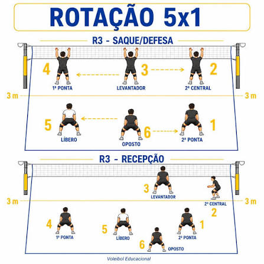
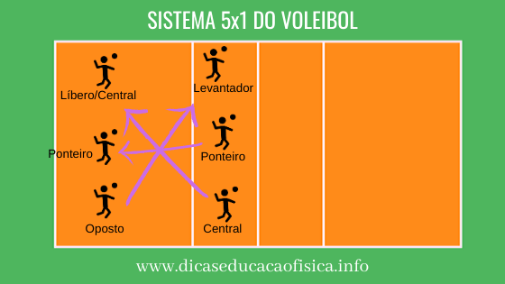

O que é?
No voleibol, a rotação (ou rodízio) é a movimentação obrigatória dos jogadores a cada vez que a equipe recupera o direito de sacar. O movimento é feito no sentido horário. Se a regra não for respeitada no momento do saque, a equipe comete uma "falta de rotação" e perde o ponto.
Como é realizada
A quadra é dividida em 6 posições, numeradas assim (olhando para a rede):
Posição 4 (esquerda), Posição 3 (centro), Posição 2 (direita).
Posição 5 (esquerda), Posição 6 (centro), Posição 1 (direita).
O movimento: toda vez que o time que recebeu o saque faz o ponto, ele ganha o direito de sacar e todos os jogadores se movem uma posição no sentido horário. O jogador da Posição 2 vai para a 1 e realiza o saque; o da 1 vai para a 6; o da 6 para a 5; o da 5 para a 4; o da 4 para a 3; e o da 3 para a 2.
O time que já estava sacando e pontuou não roda: os jogadores continuam na mesma formação.


Posição x Funções
As posições numéricas valem apenas para o momento em que o árbitro autoriza o saque. Depois que a bola entra em jogo, os jogadores correm para suas funções táticas reais (levantador, central, líbero etc.).
- Falta de rede: o jogador de fundo não pode subir para bloquear ou atacar pisando na zona de ataque.
- Falta de alinhamento: durante o saque, os jogadores das linhas (rede e fundo) não podem inverter seus lados, e o jogador de fundo não pode ficar mais próximo da rede do que o companheiro de rede correspondente.
Posições específicas no 5x1
- Levantador
- Fica oposto ao oposto e é responsável pelo segundo toque da equipe.
- Oposto
- Fica oposto ao levantador e ataca na saída de rede.
- Ponteiro
- Fica oposto ao ponteiro e ataca na entrada de rede.
- Central
- Fica oposto ao central ou ao líbero e é responsável por ataques rápidos no meio da rede.
- Líbero
- Fica oposto ao central. É uma posição exclusiva de defesa: não pode sacar nem atacar, e sua principal função é receber os saques e ataques da equipe adversária.
